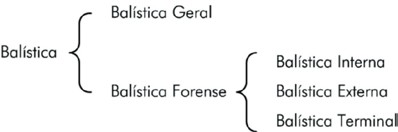

O termo balística origina-se, provavelmente, da palavra latina baleare, que, por sua vez, deriva do grego βαλλω(ballo), que significa atirar, arremessar. A Balística, enquanto um ramo da Física e como uma ferramenta técnico- científica da Criminalística, pode ser dividida e conceituada da seguinte forma:
Balística Geral: é a parte da Física, compreendida no capítulo da Mecânica, que estuda o movimento dos projéteis, conceituando-se como projétil todo corpo que se desloca livre no espaço, em virtude de um impulso recebido (Rabello, 1995, p.21).
Balística Forense: ou simplesmente Balística, é uma disciplina, integrante da Criminalística, que estuda as armas de fogo, sua munição e os efeitos dos disparos por elas produzidos, sempre que tiverem uma relação direta ou indireta com infrações penais, visando a esclarecer e a provar sua ocorrência (Tochetto, 2011, p.3). Do ponto de vista didático, e para melhor entendimento dos diversos tipos de estudos realizados, a Balística Forense é constantemente dividida em três áreas:
Balística Interna: estuda a estrutura, os mecanismos, o funcionamento e as características das armas de fogo, bem como os fenômenos e os efeitos ocorridos na arma, desde a detonação da espoleta, por meio da ação do sistema de percussão, até o momento em que o projétil sai do cano.
Balística Externa: estuda o projétil, desde a sua saída do cano até o momento de sua parada final, analisando sua trajetória, velocidade e energia, para determinar como as características do projétil, geometria, massa e movimentos, e fatores externos (resistência do ar e ação da gravidade) interferem nestas grandezas. Na Balística Externa também estão incluídos os estudos para se determinar alcance de tiro, alcance útil, alcance máximo e alcance com precisão e outras características do tiro prático e do tiro militar.
Balística Terminal: estuda os efeitos produzidos pelo projétil ao atingir um alvo. Quando o alvo é humano, cabe à Medicina Legal o estudo dos vestígios intrínsecos ao ser humano (lesões traumáticas), e à Balística os vestígios extrínsecos ao ser humano (resíduos de pólvora e projéteis).

Figura 1 – Divisões da Balística (Figura: Marcelo Jost).
A Balística, apesar de ter suas origens na Medicina Legal, logo passou a desen volver seus próprios métodos de investigação e técnicas de pesquisa, de modo que hoje ela é tratada como uma disciplina autônoma dentro da Criminalística. Entre os principais campos de atuação e de pesquisa na Polícia Federal, podem ser destacados:
Criminalística;